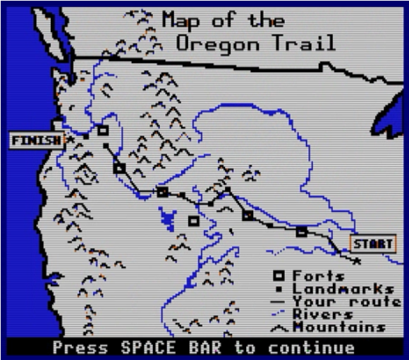
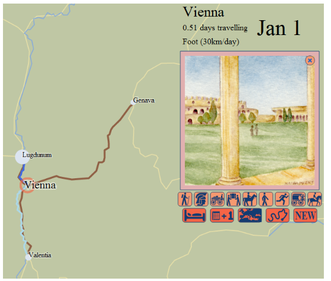
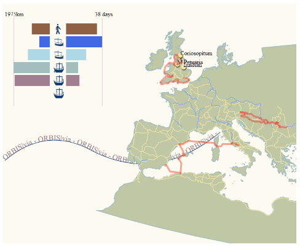
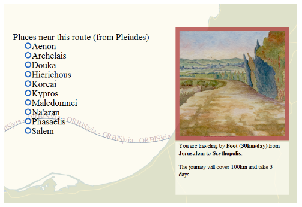

The following also appears in the Applying page of ORBIS.
ORBIS|via: A Situated Perspective of a Transportation Network Based on Computer Gaming Principles
ORBIS|via can bee seen at orbis.stanford.edu/via/
The initial response to the release of ORBIS: The Stanford Geospatial Network Model of the Roman World has relied on the use of metaphor to describe the type of knowledge conveyed. This is typically demonstrated by descriptions of ORBIS as a “Google Maps for Rome” or its equivalent.[1] That there now exists an entire genre of interactive network transportation models, and that they are common enough (and commonly understood enough) that such an abstract thing can be expressed rather easily, is in large part the reason for the broad popularity of ORBIS.[2] The effectiveness of ORBIS in its ability to relay complex information about the transportation network of the Roman World is dramatically enhanced by how literate modern society is in transportation network models. It stands to reason that, if the purpose of scholarly publication is to be as effective as it can be in presentation of knowledge, then the existence of these ready metaphors should be taken advantage of in digital humanities scholarship whenever possible. This may lead to a “Twitter for Trees”, or a “Facebook for Dead People”, which, while sounding frivolous, would take advantage of the ubiquity of complex software representation of various phenomena having raised the literacy in such phenomena (such as social networks or correspondence networks) if presented in the manner of these emerging genres.
In the case of ORBIS, another significantly large category of responses focuses on a different metaphor: gaming. Users of ORBIS have suggested that it would be useful for improving strategy games and wargames, such as the expected sequel to Rome: Total War. Similarly, gamers in different media, such as pen-and-paper role-playing games, have pointed to the usefulness of ORBIS in generating fantasy worlds as well as better understanding pre-modern travel conditions. While these all evaluate ORBIS in its capacity to improve games, one individual game continues to be mentioned in the same metaphorical space as Google Maps: The Oregon Trail.
Originally written in 1971, The Oregon Trail is a simulation of travel from the east coast of the United States to Oregon territory in the 19th century. Popular in schools in the late 1970s and 1980s,[3] The Oregon Trail simulated various aspects of travel, including illness and injury to travelers and their draft animals. Along with a simple description of locations along the eponymous trail and the travel between them, it gave players a few mini-games based on hunting, river crossing, and rafting. It is, in a sense, entirely unlike ORBIS, which presents the Roman Empire as a modern structure from a strategic, not situated, perspective.[4] But in another sense, ORBIS is very much like The Oregon Trail, and not just because it shares the subject matter of historical travel. Users of both intuitively understand that The Oregon Trail is a network–albeit a simple one with only a few branches–and that they are making decisions about how to traverse that network. This situated perspective within the network provides a different point of interaction with its structure that allows users to experience the network model in what is obviously a memorable and intuitively powerful manner. ORBIS|via provides such a local view of the ORBIS network, to complement the strategic view offered by the route-finding map and the world view offered by the dynamic distance cartogram.

The Oregon Trail game map, emphasizing its network characteristics.
There are no gamified elements in ORBIS|via, either from the modern perspective of using gamification to provide users with rewards for desired activity or in the introduction of simulated activity within a ludic framework. This was considered and tested out in various iterations of the work. One possibility was the “random danger” model in The Oregon Trail often referenced by players (as well as ORBIS users). Travel between sites in the game triggers random events drawn from historical dangers such as wildlife and disease. While it would be easy enough to replace consumption with the Antonine Plague; “pepperony and cheese” with The Dying Gaul; and snakebite with huns; this didn’t seem like it would add any meaningful value and would only highlight how far from being a game ORBIS|via really is. The only game-like elements are those that emerge naturally from the model, such as choice of vehicle and path.
A simple mercantile model was considered, with users purchasing or extracting resources at one site and then actively traversing the network to sell them at another. But there is little in the way of reliable, data-ready resources that describe the Roman Empire from an economic or demographic perspective, though groups like the Roman Economy Project are working toward rectifying this. Additionally, there is already marked confusion about interpreting the cost to move goods and passengers in the ORBIS route-finder.[5] With these factors in mind, only travel speed is accounted for in ORBIS|via.
These and other expansions in functionality were also avoided because they would require more research and domain knowledge than was available for ORBIS|via, which was designed to demonstrate the multiple points of interaction afforded by models in the digital humanities, and not to provide a fully-realized piece of educational or entertainment software. As such, it will likely not satisfy fans of The Oregon Trail who expect to ford the Rubicon. But as a demonstration of the flexibility of models it provides a significantly different view on the same digital object while still maintaining a focus on the subject of the model: the shape of the Roman world.

The watercolor vignette signals to the user the mode of travel and the site ranking.
Some game elements are maintained within ORBIS|via. Most obviously, the use of illustrated vignettes to symbolize the type of travel and site was a common method in early computer games before storage and processing allowed for fully animated 3D worlds. In this case, the vignettes are used to highlight the pastoral nature of the Roman world, in contrast to a depiction that focuses on the urban environment. The use of icons to represent the restricted activity that a user can perform enables a highly abstract and simplified interface.[6] By emphasizing the time of year and the duration of travel, ORBIS|via reinforces that a situated perspective of the network depends not only on the speed and location of the individual in it, but also the period in which the travel takes place. A tally of activity within the network, both in the form of the path of travel as well as some simple statistics about modes, is also a common game element.

The path of a user's route selection and the summary statistics for the time and distance spent on each mode of travel.
As big, linked, spatial data becomes more familiar to scholars and developers, the integration of such data into projects, as well as the integration of means to allow data from such projects to link with others, becomes paramount. It stood to reason to demonstrate some data integration despite the inability to discover any readily available demographic, environmental, or economic data for the period and region. To that end, travel between sites in ORBIS|via provides a simple list of locations from Pleiades as can be found within a small buffered zone around the path of that segment, with links to the Pleiades entries for those points. This is only a crude example of the integration of datasets for interactive scholarly works, but it provides some indication of the kind of work that is possible.

A list of up to ten sites from Pleiades that are located within a 15km buffered zone around the route but not within a 15km buffered zone around the start and destination sites.
The situated perspective is not simply a tool for entertainment or education. Its creation and testing revealed errors in the network structure that were difficult to discover when examining the network as a database or using the route finder. What a situated perspective into a historical transportation network can provide beyond that is the capacity for located, temporal, personified perspectives of structures within the network. This is especially useful where events are modeled, as the situated perspective provides a ready and comprehensible filter for events. Perhaps the most useful aspect of the situated perspective is that it provides scholars with a theoretical framework for designing and testing agent-based models.
Notes
- Other metaphors for ORBIS gleaned from press and comments are: Das “Google Maps” der Antike, Een TomTom voor het Romeinse Rijk, and Stanford’s Mapquest for the Roman Empire
- This was expressed rather succinctly by Rebecca Rosen in her article in The Atlantic.
- I wrote this without having first heard of situated perspective as it is used in computer and cognitive science. While a brief review of its use in those areas seems to broadly agree with my use here, I simply mean to situate a reader or user within a digital object, providing them with a view of the network “on the ground”. When I was originally considering this concept, I referred to it as a “first-person perspective” but felt this was too limiting.
- The Oregon Trail continues to be popular, spawning versions for the Wii, iPhone and Facebook, among other modern platforms.
- ORBIS lists costs for routes when speed is the determining factor (the fastest option) but that cost assumes either a carriage for private travel or a donkey or wagon for grain. Despite noting this in the documentation and the results, users often refer to the expense to transport passengers via 24-hour horse relay or military march. The price per kilogram of grain is also sometimes confused with the price for passage of an individual. Another ambiguating factor of the price to travel is that it represents, in the case of passengers, a price that would not be paid on land if the traveler used their own vehicle. A later revision to the ORBIS route-finding interface will attempt to highlight these factors.
- ORBIS|via uses icons from The Noun Project, all of which are public domain or CC0 except:
- “Horse Riding”, Marc Serre, from The Noun Project
- “Bed”, Christopher T. Howlett, from The Noun Project